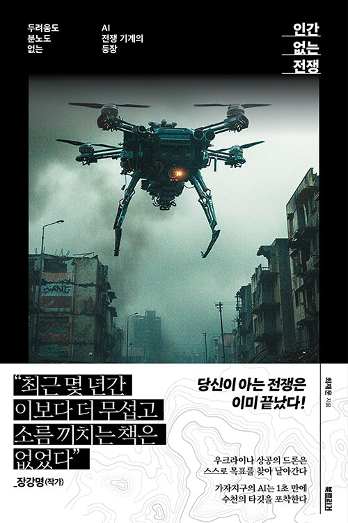
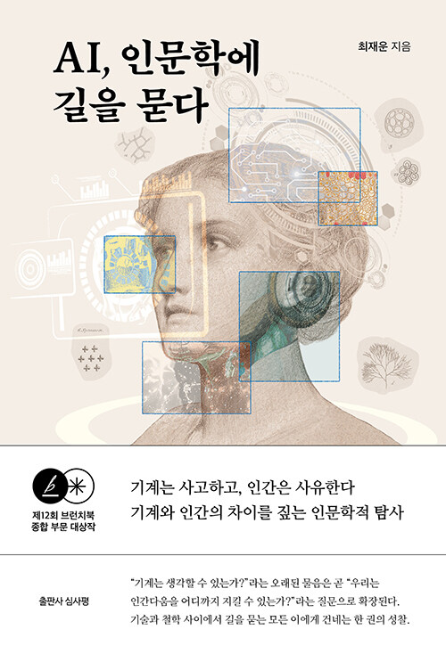
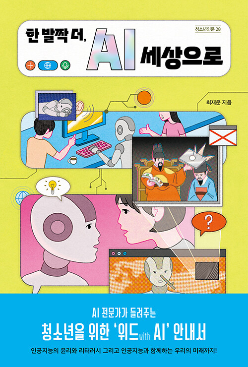

AI를 전공자의 언어에서 일반 독자의 질문으로 옮겨오는 작업. 지금까지 단독 저서 네 권을 펴냈고, 그 중 한 권은 제12회 브런치북 출판 대상을 받았습니다.

자율살상무기·드론·알고리즘 전쟁 — '인간 없는 전쟁'이 가능해진 시대, 인간은 어디에 남아 있어야 하는가를 묻는 책. 조선·중앙·동아·한겨레·매일경제·한국일보 등 주요 일간지에서 비중 있게 다뤘고, 교보·예스24·알라딘 등 주요 온라인 서점 메인 배너와 베스트셀러 순위권에 진입했습니다. 출간 이후 국회 입법조사처 간담회, 육군대학 현역 장교 100여 명을 대상으로 한 특강, 일반 독자 대상 북토크 콘서트 등 다양한 자리에서 저자 강연으로 이어지고 있습니다.
기술이 빠르게 진보할수록, 인간은 무엇을 놓치고 있는가. 플라톤의 동굴에서 SF 소설까지 경유하며 AI 시대의 질문을 다시 써봅니다. 기업 초청 특강, 그랜드마스터클래스(GMC) 북토크, 주요 도서관 작가와의 만남에서 자주 다뤄지며, 유튜브 채널에도 이 주제로 꾸준히 출연해 왔습니다.

